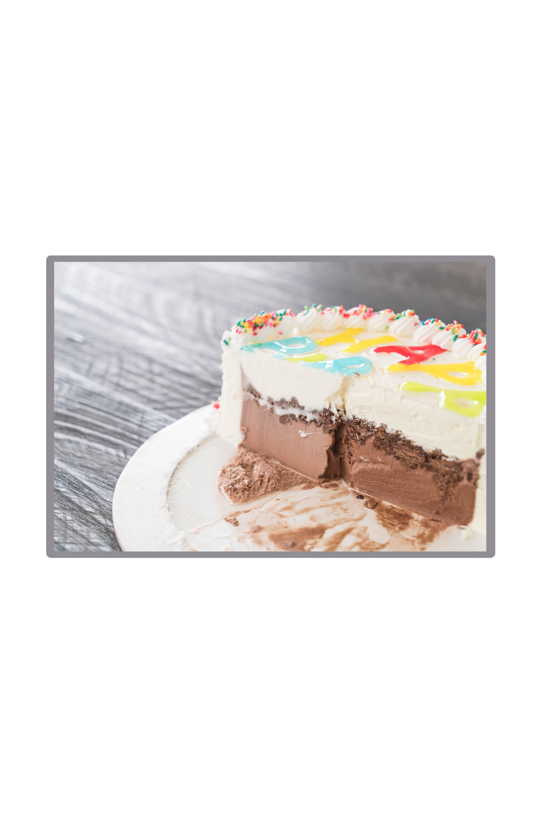

Ice Cream Cake

An easy no-bake dessert perfect for the summer months!
This easy, no-bake cake is the perfect way to
beat the summer heat. Customize with your favorite
ice cream flavors.
Because this cake needs to freeze for at least 12 hours
prior to serving, it's a great make-ahead dessert for
for celebratons.
Ingredients
Cake
- 10 Oreo cookie
- 2 Tbsp butter, melted
- 1.5 quarts chocolate ice cream, softened
- 1 cup hot fudge
- 1.5 quarts strawberry ice cream
Topping
- 2 cups heavy whipping cream
- 1/3 cup confectioners' sugar
- optional for garnish: sprinkles
Directions
- In a food processor or blender,
pulse 10 Oreos (including the cream
filling) into a coarse crumb; feel
free to leave some larger chunks.
You should have about 1 cup crumbs.
Mix with the melted butter and set
aside to use in step 4.
- Remove chocolate ice cream (or desired
bottom-layer flavor) from the freezer and
let it soften for 10 minutes. Meanwhile,
line a 9x3 inch springform pan with plastic
wrap.
- Scoop chocolate ice cream into lined pan and,
working quickly, use the back of a large spoon
to spread it into an even layer as best you can.
Place it in the freezer for 30 minutes.
- During that time, warm up pre-made hot fudge sauce
so that it’s a spreadable consistency. Pour and
spread 1/2 cup hot fudge evenly over the first
ice cream layer, then top with Oreo mixture.
- Freeze for 30 minutes. After 20 minutes, remove strawberry ice cream
(or desired top flavor) from the freezer to soften for 10 minutes.
- Drizzle remaining 1/2 cup hot fudge on top of Oreo layer. Working quickly,
spoon and spread strawberry ice cream into an even layer as best you can.
- Cover with plastic wrap or aluminum foil and freeze for at least 12 hours
and up to 2 days.
- Freeze the cake plate: If you want to serve the cake on something other than
the bottom of the springform pan (or if you made this in a 9×13-inch pan or
8-inch square pan), place your desired cake plate/stand or cutting board in
the freezer for at least 30 minutes. (The bottom ice cream layer will begin
to melt immediately on a room-temperature surface.)
- Make the whipped cream topping: Using a handheld mixer or a stand mixer
fitted with a whisk attachment, beat the heavy cream, confectioners’ sugar,
and vanilla on medium-high speed until stiff peaks form, about 4 minutes.
- Remove the frozen ice cream cake from the freezer. Remove the rim from the
springform pan. Lift the cake up using the plastic wrap and carefully peel
off the plastic. Place the cake back on the bottom of the springform pan,
or the frozen cake plate/cutting board. Working quickly, spread the whipped
cream all over the top and sides of the ice cream cake. Feel free to pipe a
border around the top of the cake; I used Wilton 1M piping tip. Garnish
with sprinkles, if desired.
- Slice and serve immediately or freeze for up to 1 hour before serving. (I
don’t recommend longer than this.) Use a very sharp knife to cut, dipping
it into a glass of hot water in between slices. Keep leftover ice cream cake
covered in the freezer.
Home